Создание шаблона
После настройки приложения переходим к созданию шаблона.
Шаблон создаётся из карточки той сущности Битрикс24, в которой он будет использоваться. Например, чтобы создать шаблон для сделок, необходимо открыть любую карточку сделки.
Переход к шаблонам
-
Откройте нужную сущность Битрикс24, например «Сделки».
-
Откройте любую карточку выбранной сущности.
-
В меню карточки выберите пункт «Шаблоны Комбинатор».
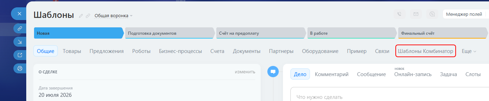
Если пункт не отображается в основном меню, откройте раздел «Ещё».
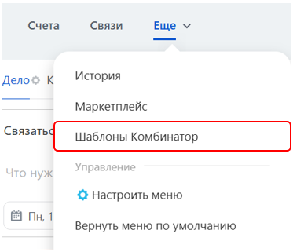
Чтобы закрепить пункт в основном меню, нажмите «Настроить меню», зажмите пункт «Шаблоны Комбинатор» левой кнопкой мыши и перенесите его в нужное место. Затем завершите настройку.
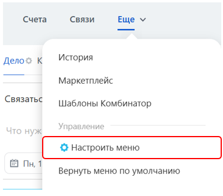
Если пункт «Шаблоны Комбинатор» не отображается ни в основном меню, ни в разделе «Ещё», перейдите к настройке приложения и проверьте, установлен ли флажок напротив нужной сущности.
Создание нового шаблона
-
После перехода на вкладку «Шаблоны Комбинатор» нажмите кнопку «Новый шаблон».
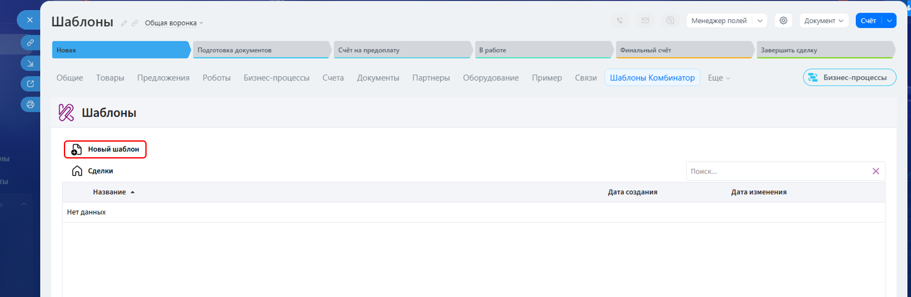
-
Введите название шаблона и нажмите кнопку «ОК».
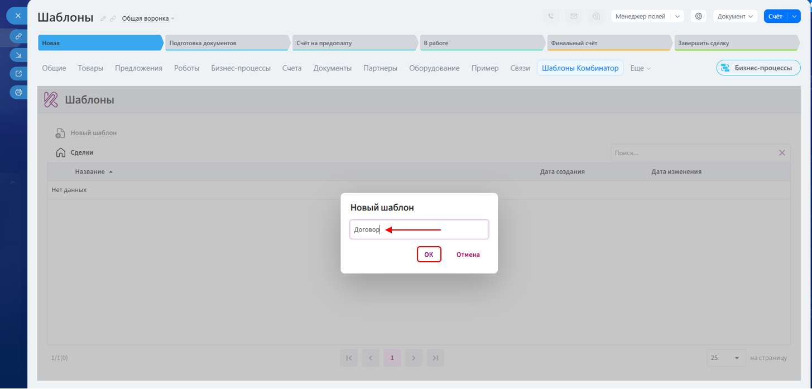
-
Откройте вкладку «Файл», нажмите кнопку «Открыть» и выберите на устройстве документ в формате DOCX, который необходимо преобразовать в шаблон.
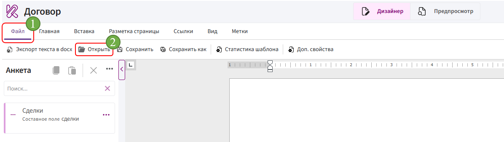
Добавление полей в анкету
Анкета — это панель в левой части редактора, содержащая поля, данные из которых используются для заполнения шаблона.
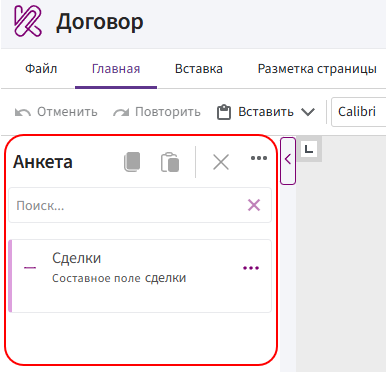
-
Нажмите на три точки напротив блока с названием нужной сущности, например «Сделки», и выберите пункт «Редактирование поля».
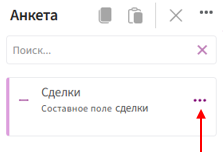
-
В открывшемся окне найдите нужные поля с помощью поиска или прокрутки списка.
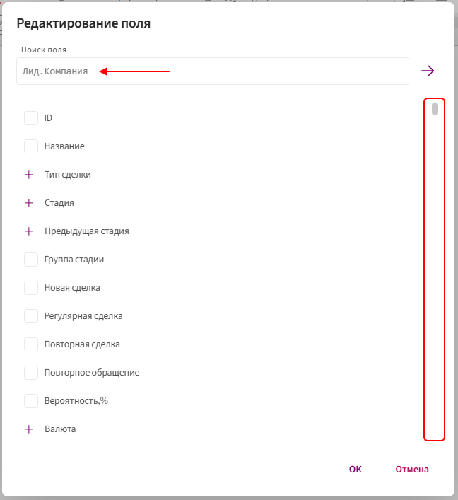
-
Установите флажки напротив полей, которые необходимо добавить в анкету, и нажмите кнопку «ОК».
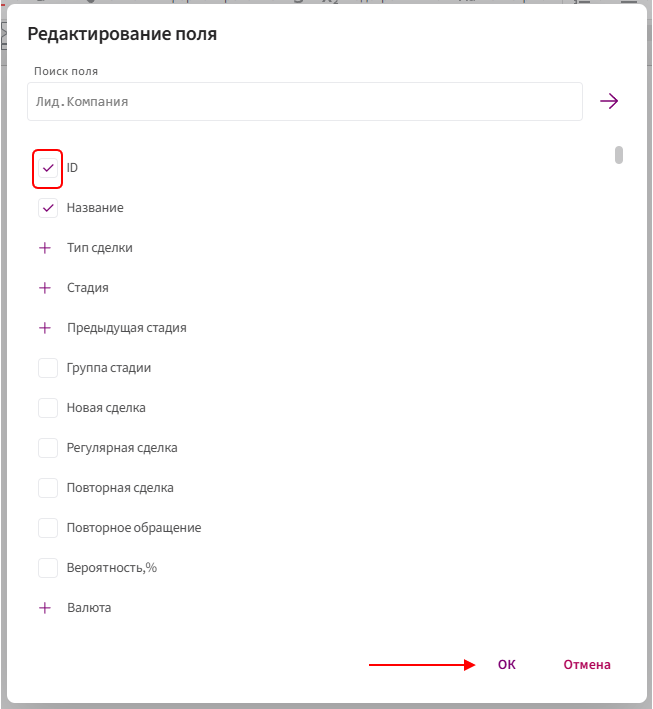
Примечание. Пользовательские поля Битрикс24 обозначаются префиксом UF_CRM_.
Добавление полей в документ
Общий порядок вставки:
-
Установите курсор в нужное место документа.
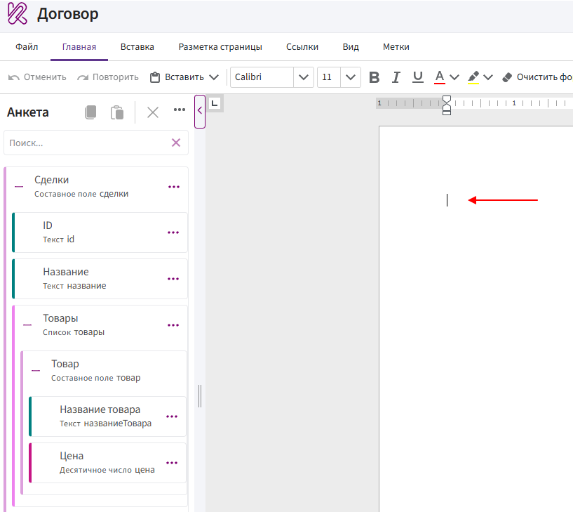
-
Найдите поле в анкете.
-
Нажмите на три точки напротив поля.
-
Выберите способ вставки.
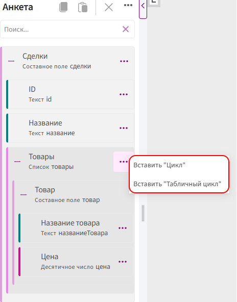
Работа с полями в документе
Пример:
Поля из анкеты можно вставить в документ как значение, условие, выбор, цикл или табличный цикл.
Перед добавлением поля определите его тип и проверьте, не находится ли оно внутри списка.
Как определить тип поля
Тип указан под названием поля в анкете.
Например:
- Название товара — тип Текст;
- Цена — тип Десятичное число;
- Товары — тип Список;
- Товар — тип Составное поле.
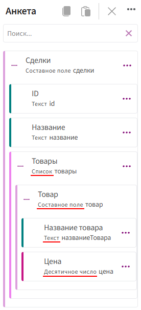
Вложенность полей показана с помощью отступов. Чем правее расположено поле, тем глубже оно находится в структуре.
Чем отличаются способы вставки
| Способ вставки | Принцип работы | Для каких полей предназначен |
|---|---|---|
| Вставить "Значение" | Подставляет в документ значение поля | Текст, число, дата |
| Вставить "Условие" | Управляет отображением фрагмента документа. Фрагмент выводится только при выполнении заданного условия | Да/Нет |
| Вставить "Выбор" | Позволяет задать отдельное содержимое для каждого варианта поля | Текст |
| Вставить "Цикл" | Создаёт повторяющуюся конструкцию. Внутри неё размещаются текст и поля элементов списка. Содержимое повторяется для каждого элемента | Список |
| Вставить "Табличный цикл" | Работает как обычный цикл, но повторяет строки таблицы. В ячейки повторяемой строки можно вставить поля элементов списка | Список |
Примечание. Для каждого типа поля доступен определённый набор функций. В таблице приведены ссылки на описания типов полей с указанием доступных функций.
Ошибка «Маркер должен быть внутри…»
Сообщение «Маркер должен быть внутри…» появляется, если поле находится внутри списка, но добавляется в документ за его пределами.
Например, при попытке вставить поле «Название товара» вне цикла появится сообщение:
Маркер должен быть внутри Товары.
Это означает, что поле «Название товара» находится внутри списка «Товары».
В этом случае:
-
Добавьте поле «Товары» как цикл или табличный цикл.
-
Установите курсор внутрь добавленной конструкции.
-
Добавьте поле «Название товара» как значение.
Если после этого появляется аналогичное сообщение с названием другого списка, значит поле находится внутри нескольких вложенных списков. Добавьте отдельный цикл для каждого списка, двигаясь от внешнего списка к внутреннему.
После создания шаблона:
- если документ должен формироваться автоматически с помощью роботов или бизнес-процессов Битрикс24, переходите к автоматизации шаблона;
- если автоматизация не требуется, переходите к формированию документа.